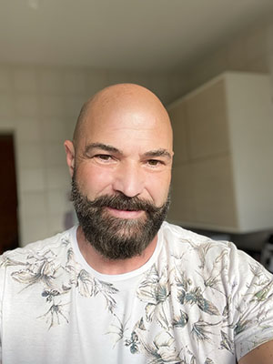

|  |
Luiz Eduardo FerriChemical Engineer Created data visualization in Tableau to allow quick analysis of Environmental and Safety data. Provided Environmental data and answers to numerous surveys and requests. Provided key data to the GRI report and CDP Questionnaire. Calculated, verified, and reported Corning's scopes 1,2 and 3 emissions. Managed the revised assurance process which includes scope 3 emissions. While Process Engineer, supported a number of initiatives with Corning including: CDT Melting, conceived of and conducted a set of oil model experiments that demonstrated that a large bubble could develop at the bottom of the stirrer, and such a bubble could create a giant blister. Successfully led the blister team that developed and installed two SCDT capsules to reduce giant blisters. In Diesel Finishing, led the effort to develop a prototype applicator based on modeling to provide a uniform flow profile and improve the way the skin was applied on the filter. The new applicator enhanced first-pass material utilization by 50% and decreased the amount of waste by 60%; thus, saving $2 million in material costs annually. |
| Year | |
|---|---|
| 2010-2016 | Process Engineer |
| 2016-2022 | Environmental Engineer |
| Cooking | ⭐⭐⭐⭐⭐ |
| data analysis | ⭐⭐⭐⭐ |
| Web development | ⭐ |
| Tableau | ⭐⭐⭐⭐⭐ |